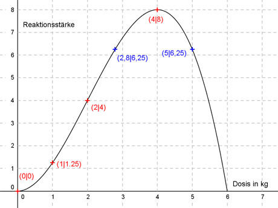

Aufgabe 142
Ein Chemiker hat ein Mittel entwickelt und will dessen
Wirkung mit einer ganzrationalen Funktion 3. Grades
beschreiben. Dazu hat er die Reaktionsstärke R auf das
Mittel in Abhängigkeit von der Dosis in kg gemessen.
(R = 0 bedeutet keine Reaktion, je größer R, desto
größer die Reaktion).
Dosis in kg 0 1 2 4
Reaktionsstärke R 0 1,25 4 8
Welche Dosis ist erforderlich, wenn R = 6,25 auftreten soll?

Allgemeine Form einer ganzrationalen Funktion 3. Grades:
f(x) = ax3 + bx2 + cx + d
f’(x) = 3ax2 + 2bx + c
f’’(x) = 6ax + 2b
4 Bedingungen:
1. Dosis 0 kg und R = 0 bedeutet:
f(0) = 0 -->
a * 03 + b * 02 + c * 0 + d = 0 -->
d = 0
2. Dosis 1 kg und R = 1,25 bedeutet:
(d = 0 eingesetzt)
f(1) = 1,25 -->
a * 13 + b * 12 + c * 1 = 1,25 -->
a + b + c = 1,25 I
3. Dosis 2 kg und R = 4 bedeutet:
(d = 0 eingesetzt)
f(2) = 4 -->
a * 23 + b * 22 + c * 2 = 4 -->
8a + 4b + 2c = 4 II
4. Dosis 4 kg und R = 8 bedeutet:
(d = 0 eingesetzt)
f(2) = 8 -->
a * 43 + b * 42 + c * 4 = 8 -->
64a + 16b + 4c = 8 III
I * (-2) + II
-2a - 2b - 2c = -2,5
8a + 4b + 2c = 4
---------------------
6a + 2b = 1,5 IV
I * (-4) + II
-4a - 4b - 4c = -5
64a + 16b + 4c = 8
---------------------
60a + 12b = 3 V
IV * (-6) + V
-36a - 12b = -9
60a + 12b = 3
----------------
24a = -6 |:24
a = -0,25
a = -0,25 in IV eingesetzt:
6 * (-0,25) + 2b = 1,5
-1,5 + 2b = 1,5 |+1,5
2b = 3 |:2
b = 1,5
a = -0,25 und b= 1,5 in I eingesetzt:
-0,25 + 1,5 + c = 1,25
1,25 + c = 1,25 |-1,25
c = 0
Gesuchte Funktion:
f(x) = -0,25x3 + 1,5x2
R = 6,25 -->
6,25 = 0,25x3 + 1,5x2 |-6,25
0,25x3 + 1,5x2 - 6,25 = 0
Mögliche Lösungen dieser Gleichung sind die
Faktoren von 6,25:
6,25 = 5 * 1,25 = 5 * 5 * 0,25 = 5 * 5 * 5 * 0,05 = 5 * 5 * 5 * 5 * 0,01
Hornerschema an der Stelle x = 5:
-0,25 1,5 0 -6,25
x = 5 -1,25 1,25 6,25
-0,25 0,25 1,25 0
Lösung der quadratischen Gleichung:
-0,25x2 + 0,25x + 1,25 = 0 |*(-4)
x2 - x - 5 = 0
p, q - Formel:
p = -1, q = -5
 x1,2 = 0,5 ± √5,25
x1,2 = 0,5 ± 2,3
x1 = 0,5 + 2,3 = 2,8
x2 = 0,5 - 2,3 = -1,8 keine Lösung, negative Dosis
Die Reaktionsstärke 6,25 tritt bei der Dosis 2,8 oder 5 auf.
x1,2 = 0,5 ± √5,25
x1,2 = 0,5 ± 2,3
x1 = 0,5 + 2,3 = 2,8
x2 = 0,5 - 2,3 = -1,8 keine Lösung, negative Dosis
Die Reaktionsstärke 6,25 tritt bei der Dosis 2,8 oder 5 auf.